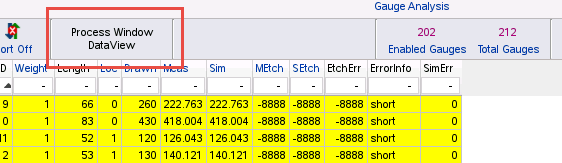
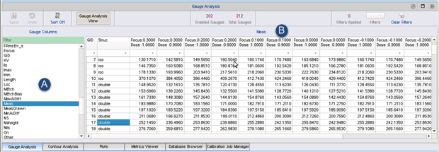

Use the Process
Window Data View to compare values across multiple process window conditions.
Procedure
- In the Gauge Analysis tab,
click the Process Window DataView button.

The view switches to
show the process window for a single column value (Meas is the default).

- Select any gauge column from the list at the
left (A in the figure).
The selected column’s value is displayed
for all focus and dose combinations in the process window. The currently
displayed column type is shown at the top of the pane (B).